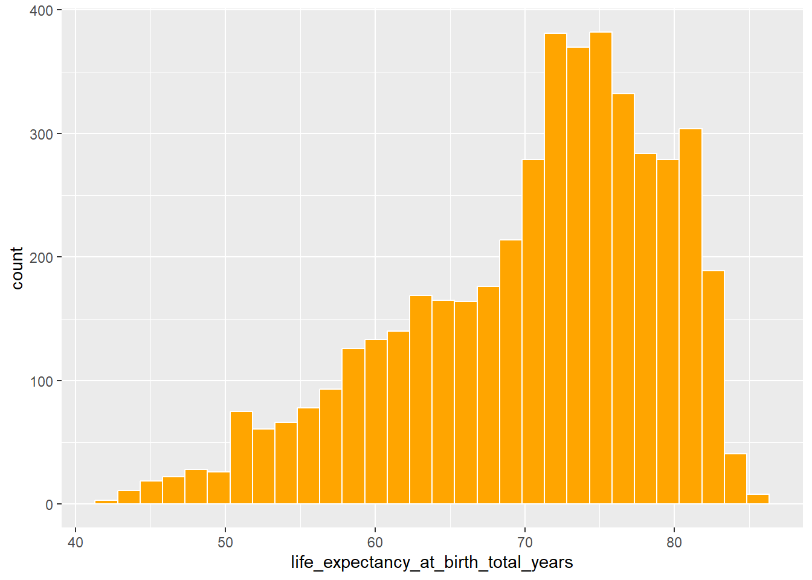
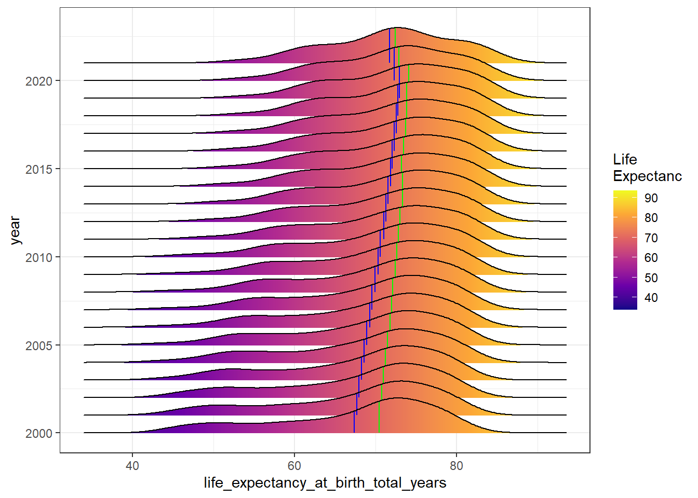

#Load libraries that will be used for this work
library(countrycode)
library(dplyr)
library(janitor)
library(ggplot2)
library(tidymodels)
library(ggridges)
library(vip)
library(tidyr)
library(stringr)Exploring Factors and Predicting Life Expectancy
Research Context and Problems to be Addressed
Life Expectancy (LE) is a crucial metric for assessing population health; it is one of the factors that make up the Human Development Index (HDI), a summary of average achievements in critical dimensions of human development.
Life Expectation is a statistical measure of the population’s longevity, that serves as a crucial indicator of the health and well-being of populations and different factors impact its value.
Governments, international organizations, and healthcare agencies use this type of research to inform public health interventions, design policies, and allocate resources effectively. Forecasting this measure and identifying the factors contributing to a determined life expectancy can assist governments, health and social services planning in investing in the proper future health trends for a particular country by identifying areas of uncertainty.
Risk factors contributing to life expectancy changes can include mortality, economic, psychosocial, and immunological factors such as GDP (Gross Domestic Product), alcohol and smoking consumption, BMI (Body Mass Index), infant and adult mortality rate, and healthcare expenditure.
Besides these factors, recent studies have been focusing on the impacts of climate change on populations’ longevity and quality of life.
Research Scope
During the literature review, it was possible to identify areas of contribution to this research area, such as:
- Focusing on environmental variables and understanding the impact of ecological degradation on life expectancy.
- Potential to use those variables with socioeconomic and health variables.
- Opportunities to understand how Machine Learning compares and performs in answering this problem, as most research used traditional statistical techniques.
This research uses environmental, demographic and socioeconomic metrics to investigate the possibility of accurately predicting global. The literature research outlined the lack of Machine Learning models being used in this task, as most papers and official bodies rely on standard statistical methodologies, giving us an opportunity to understand how Machine Learning performs in this type of work.
It is also part of this work to understand not only the possibility of predicting life expectancy but also to understand factors that affect life expectancy, as being able to explain the reason why a location has a lower or higher life expectancy is important when trying to address the problem.
Objectives
This research project has the main objective of aiming to predict life expectancy and to determine the variables that affect life expectancy prediction. In order to properly answer the objective of this work, some additional questions need to be proposed:
- Is there a relationship between health, demographic, socioeconomic and environmental factors that can lead to understanding the world and global life expectancy?
- Can a regression model be developed to provide the life expectancy if there is an association?
- Would some regions not benefit from the model as much as others?
Dataset
Dataset obtained from the World Bank Data. The dataset has three datasets in one described below:
Country view - Data per country per year
Region view - Data per different regions per year
World View - World life expectancy per year
We are interested in the country view as it gives us more data and more detailed information about life expectancy.
# Read dataset from World bank data
dt <- read.csv("dataset/b0312c21-b332-4f49-b781-9c0aa9c13825_Data.csv", na.strings = "..")
# Separate dataset
dt_countries <- dt[1:82243,]
# remove original dataset for space
rm(dt)Below, we can see the first three rows of the original dataset.
head(dt_countries, 3) Country.Name Country.Code
1 Afghanistan AFG
2 Afghanistan AFG
3 Afghanistan AFG
Series.Name
1 Access to clean fuels and technologies for cooking (% of population)
2 Access to clean fuels and technologies for cooking, rural (% of rural population)
3 Access to clean fuels and technologies for cooking, urban (% of urban population)
Series.Code X2000..YR2000. X2001..YR2001. X2002..YR2002. X2003..YR2003.
1 EG.CFT.ACCS.ZS 6.2 7.2 8.2 9.5
2 EG.CFT.ACCS.RU.ZS 1.0 1.2 1.4 1.7
3 EG.CFT.ACCS.UR.ZS 28.8 33.0 37.4 41.8
X2004..YR2004. X2005..YR2005. X2006..YR2006. X2007..YR2007. X2008..YR2008.
1 10.9 12.2 13.85 15.3 16.7
2 2.1 2.5 3.00 3.7 4.3
3 46.7 51.1 55.90 59.8 63.5
X2009..YR2009. X2010..YR2010. X2011..YR2011. X2012..YR2012. X2013..YR2013.
1 18.4 20.00 21.8 23.0 24.8
2 5.3 6.15 7.1 8.2 9.1
3 66.7 69.50 72.1 74.4 75.7
X2014..YR2014. X2015..YR2015. X2016..YR2016. X2017..YR2017. X2018..YR2018.
1 26.1 27.4 28.6 29.7 30.90
2 10.2 11.1 12.2 13.0 13.85
3 77.6 78.8 79.7 80.9 81.60
X2019..YR2019. X2020..YR2020. X2021..YR2021. X2022..YR2022.
1 31.9 33.2 NA NA
2 15.1 15.9 NA NA
3 82.3 82.6 NA NATransformation to Tidy Format
The data is not in a tidy format, i.e., is not ready for processing the data, so some transformations will be applied to the data to make it easier to manipulate and analyse the data. The transformations applied are:
- Remove country series columns as it gives the same information as the series name, that are the variables of our data, but in a coded format
- Pivot the data by transforming all the years columns are rows of the dataset
- Make series names the new columns of the dataset
- Clean the column names by replacing spaces and special characters to underscores
- The years have the format XYYYY..YRYYYY., and we are interested only on the YYYY information, so we need to extract it from the string
dt_to_use <- dt_countries |>
# Remove series code as it is the code of the variables
select(-Series.Code) |>
# Pivot data
gather("year", "value", -c(Country.Name, Country.Code, Series.Name)) |>
# Make Series names columns
spread(Series.Name, value) |>
# Clean names by replacing spaces and special characters to underscores
janitor::clean_names() |>
# Extract the year information for the years
mutate(year = stringr::str_remove(year, "X\\d{4}..YR")) Some extra transformation are needed before the analysis can be conducted:
- Transform the year to numeric
- Add the region information
- Remove the 2022 columns as we don’t have any data for that year
# Year as numeric
dt_to_use <- dt_to_use |>
mutate(year = as.numeric(gsub("[.]", "", dt_to_use$year)))
# Ddd region information
dt_to_use <- dt_to_use |>
mutate(country_name = ifelse(country_name == "Turkiye", "Turkey", country_name)) |>
mutate(region = as.factor(countrycode(sourcevar = country_name,
origin = "country.name",
destination = "region"))) |>
mutate(country_name = as.factor(country_name),
country_code = as.factor(country_code))
# We don't have the year of 2022 -> remove it
dt_to_use <- dt_to_use |>
filter(year != 2022)Response Variable
We can understand a bit more about the response variable by doing a brief descriptive analysis.
Below, we can see the histogram of the life expectancy. It is possible to see that the data is left-skewed, with an outlier observation of life expectancy being less than 30 years and the peak being around 72 years.
dt_to_use |>
ggplot() +
aes(x = life_expectancy_at_birth_total_years) +
geom_histogram(fill = "orange", col = "white")
Below we can see a table with the summary statistics of the life expectancy. The minimum life expectancy is approximately 42 years and the maximum is 85 years. The mean life expectancy across the different years and countries is 70 years and the median is around 72 years.
dt_to_use |>
summarise(median = median(life_expectancy_at_birth_total_years, na.rm = TRUE),
iqr = IQR(life_expectancy_at_birth_total_years, na.rm = TRUE),
mean = mean(life_expectancy_at_birth_total_years, na.rm = TRUE),
sd = sd(life_expectancy_at_birth_total_years, na.rm = TRUE),
min = min(life_expectancy_at_birth_total_years, na.rm = TRUE),
max = max(life_expectancy_at_birth_total_years, na.rm = TRUE)) median iqr mean sd min max
1 72.415 12.27825 70.4659 8.82724 41.957 85.49756We can also see the life expectancy distribution per year. The green line represents the median life expectancy at birth, and the blue line represents the mean life expectancy at birth. It is possible to see that there is a positive trend with the overall distribution tending for people to live longer as the years pass, but the peak of life expectancy seems to have decreased from 2020 compared to the previous years.
dt_to_use |>
ggplot() +
aes(x = life_expectancy_at_birth_total_years, y = year, group = year, fill = stat(x)) +
geom_density_ridges_gradient(scale = 2, rel_min_height = 0.01, quantile_lines = TRUE,
vline_color = c("green"),
quantile_fun = median) +
geom_density_ridges_gradient(
scale = 2,
rel_min_height = 0,
quantile_lines = TRUE,
vline_color = c("blue"),
fill = NA,
quantile_fun = mean
) +
scale_fill_viridis_c(name = "Life \nExpectanc", option = "C") +
theme_bw()
The table below displays the summary statistics of life expectancy per different regions. The region with the lowest life expectancy is the Sub-Saharan Africa followed by South Asia.
dt_to_use |>
group_by(region) |>
summarise(n_countries = n_distinct(country_name),
median = median(life_expectancy_at_birth_total_years, na.rm = TRUE),
iqr = IQR(life_expectancy_at_birth_total_years, na.rm = TRUE),
mean = mean(life_expectancy_at_birth_total_years, na.rm = TRUE),
sd = sd(life_expectancy_at_birth_total_years, na.rm = TRUE),
min = min(life_expectancy_at_birth_total_years, na.rm = TRUE),
max = max(life_expectancy_at_birth_total_years, na.rm = TRUE))# A tibble: 7 x 8
region n_countries median iqr mean sd min max
<fct> <int> <dbl> <dbl> <dbl> <dbl> <dbl> <dbl>
1 East Asia & Pacific 37 71.3 10.9 72.2 6.98 56.5 85.5
2 Europe & Central Asia 58 77.0 8.06 76.3 4.80 63.3 84.4
3 Latin America & Caribbean 42 73.7 4.64 73.5 3.92 46.0 82.2
4 Middle East & North Africa 21 74.4 6.37 73.7 5.32 56.6 82.9
5 North America 3 79.6 2.54 79.7 1.65 76.3 82.6
6 South Asia 8 67.4 6.94 68.2 5.35 55.3 80.1
7 Sub-Saharan Africa 48 58.8 8.64 58.4 6.68 42.0 77.2Data Preprocessing
The data preprocessing can be handled during the recipe steps available within the tidymodels functionality. Still, first we will check the variables that needed to be removed if they contain more than 50% of their values missing.
Missing Values
We are going to remove the variables that don’t have any information for any country for over 50% of the time.
vars_to_drop <- dt_to_use |>
# Group by year
group_by(year) |>
# Get the missing information for all numeric variables per year
summarise(across(where(is.numeric), ~sum(is.na(.)))) |>
# Pivot data
gather("series_name", "missing", -c(year)) |>
# Retain only the data that is missing for all the countries
filter(missing == 217) |>
# Group by variable
group_by(series_name) |>
# Count the years that the information is been missing
summarise(missing_years = n()) |>
# Calculate missing percentage
mutate(pct_missing = missing_years / 24 * 100) |>
arrange(desc(missing_years)) |>
# Get the variables that are missing for more than 50% of the time
filter(pct_missing > 50) %>%
# Get the variables names
.$series_name
dt_filtered <- dt_to_use |>
select(-all_of(vars_to_drop))Preprocessing Recipe
Every transformation for the preprocessing step is done in the training step and applied to the testing set. So, first we need to split the data into these different partitions.
# Fix the random numbers by setting the seed
# This enables the analysis to be reproducible when random numbers are used
set.seed(88)
# Put 3/4 of the data into the training set
data_split <- initial_split(dt_filtered |>
select(-region) |>
filter(!is.na(life_expectancy_at_birth_total_years)),
prop = 3/4)
# Create data frames for the two sets:
train_data <- training(data_split)
test_data <- testing(data_split)Now, we can create the recipe for the preprocessing of the data.
(preprocess_recipe <- recipe(life_expectancy_at_birth_total_years ~ .,
data = train_data) |>
update_role(country_name, country_code, new_role = "ID") |>
step_impute_knn(all_predictors(), neighbors = 3) |>
step_corr(all_numeric_predictors()) |>
step_normalize(na_rm = FALSE) |>
step_dummy(all_nominal_predictors()) |>
step_zv(all_predictors()))Recipe
Inputs:
role #variables
ID 2
outcome 1
predictor 325
Operations:
K-nearest neighbor imputation for all_predictors()
Correlation filter on all_numeric_predictors()
Centering and scaling for <none>
Dummy variables from all_nominal_predictors()
Zero variance filter on all_predictors()Modelling
For the modelling steps, three models will be used:
- Linear Regression
- KNN
- Random Forest
Linear Regression
The linear regression model will be used a baseline model, i.e., for comparison with the other two models.
We first need to define the linear regression model. In R, we can train a model by frist creating a worflow, where we add the model and the preprocessing recipe. And then, we fit the data using the workflow.
# Define model
lr_mod <- linear_reg()
# Create workflow
wflow <- workflow() |>
# Add model
add_model(lr_mod) |>
# Add recipe
add_recipe(preprocess_recipe)
# Fit model to the training data
fit_linear_reg <- wflow |>
fit(data = train_data)Once the model is fitted, it is possible to extract the elements of the model.
fit_linear_reg |>
workflows::extract_fit_parsnip() |>
tidy()# A tibble: 190 x 5
term estimate std.e~1 stati~2 p.value
<chr> <dbl> <dbl> <dbl> <dbl>
1 (Intercept) 4.45e+1 1.74e+1 2.55 1.07e-2
2 year 8.33e-3 5.44e-3 1.53 1.26e-1
3 access_to_clean_fuels_and_technologies_for_~ 7.26e-3 1.69e-3 4.29 1.81e-5
4 access_to_clean_fuels_and_technologies_for_~ 1.74e-3 2.09e-3 0.831 4.06e-1
5 access_to_electricity_urban_percent_of_urba~ 8.99e-3 2.79e-3 3.23 1.27e-3
6 adolescent_fertility_rate_births_per_1_000_~ 1.14e-3 1.44e-3 0.787 4.31e-1
7 agricultural_irrigated_land_percent_of_tota~ -9.28e-3 2.61e-3 -3.55 3.86e-4
8 agricultural_land_percent_of_land_area -6.42e-3 1.73e-3 -3.72 2.05e-4
9 agricultural_land_sq_km 5.51e-8 9.02e-8 0.611 5.42e-1
10 agricultural_machinery_tractors 3.38e-7 9.41e-8 3.59 3.33e-4
# ... with 180 more rows, and abbreviated variable names 1: std.error,
# 2: statisticPerformance on the Training Set
With the model trained, we can check the performance, first, on the training set.
pred_linear_reg_train <- augment(fit_linear_reg, train_data)The performance metrics we are interested in are the RMSE, R^2 and the MAE.
pred_linear_reg_metrics_train <- metric_set(rmse, rsq, mae)
pred_linear_reg_metrics_train(pred_linear_reg_train,
truth = life_expectancy_at_birth_total_years,
estimate = .pred)# A tibble: 3 x 3
.metric .estimator .estimate
<chr> <chr> <dbl>
1 rmse standard 0.866
2 rsq standard 0.990
3 mae standard 0.664Performance on the Test Set
We can also check the performance on the testing set to understand how well the model is generalising on unseen data.
pred_linear_reg_test <- augment(fit_linear_reg, test_data)pred_linear_reg_metrics_test <- metric_set(rmse, rsq, mae)
pred_linear_reg_metrics_test(pred_linear_reg_test,
truth = life_expectancy_at_birth_total_years,
estimate = .pred)# A tibble: 3 x 3
.metric .estimator .estimate
<chr> <chr> <dbl>
1 rmse standard 0.938
2 rsq standard 0.989
3 mae standard 0.709KNN
For the KNN model, we will fit the model with resampling using the k-fold corss validation technique. The number of folds is 10.
k_folds <- vfold_cv(train_data, v = 10)
keep_pred <- control_resamples(save_pred = TRUE, save_workflow = TRUE)We are also going to hypertune the number of neighbours of the model to make sure we are selecting the best model for our data.
## Create a grid of hyperparameter values to test
k_grid <- tibble(neighbors = c(2, 3, 4, 5, 10, 15, 25, 45, 60, 80, 100))
# Define model
knn_mod <- nearest_neighbor(neighbors = tune()) %>%
set_engine("kknn") %>%
set_mode("regression")
# Create workflow
wflow_knn <- workflow() %>%
add_model(knn_mod) %>%
add_recipe(preprocess_recipe)
knn_cv <- wflow_knn %>%
tune_grid(resamples = k_folds,
grid = k_grid)The table below shows the performance for the different numbers of neighbours used. We can see that when k = 4, we have the lowest RMSe and R^2 value.
| K | Metric | Estimate | Error |
|---|---|---|---|
| 2 | RMSE | 0.0852 | 0.0280 |
| 2 | R^2 | 0.991 | 0.0007 |
| 3 | RMSE | 0.826 | 0.0280 |
| 3 | R^2 | 0.991 | 0.0007 |
| 4 | RMSE | 0.823 | 0.0280 |
| 4 | R^2 | 0.991 | 0.0007 |
| 5 | RMSE | 0.836 | 0.0273 |
| 5 | R^2 | 0.991 | 0.0007 |
| 10 | RMSE | 0.988 | 0.0232 |
| 10 | R^2 | 0.988 | 0.0008 |
| 15 | RMSE | 1.164 | 0.0214 |
| 15 | R^2 | 0.983 | 0.0009 |
We can then select the best model based on the RMSE metric and fit the data with the best model.
# Select best model based on RMSE
best_knn <- select_best(knn_cv, "rmse")
# Get the final model
final_knn <- finalize_model(
knn_mod,
best_knn
)
# Create workflow
final_knn_mod <- workflow() |>
add_recipe(preprocess_recipe) |>
add_model(final_knn)
# Fit the best model
final_knn_res <- final_knn_mod |>
last_fit(data_split)With the best model fitted, we can collect the performance metrics of the model.
final_knn_res |>
collect_metrics()# A tibble: 2 x 4
.metric .estimator .estimate .config
<chr> <chr> <dbl> <chr>
1 rmse standard 0.842 Preprocessor1_Model1
2 rsq standard 0.991 Preprocessor1_Model1We can also look at the prediction vs actual life expectancy scatterplot to understand the fit of the model.
collect_predictions(final_knn_res) |>
ggplot(aes(x = life_expectancy_at_birth_total_years , y = .pred)) +
geom_point(alpha = .15) +
geom_abline(color = "red") +
coord_obs_pred() +
ylab("Predicted Life Expectancy")
Random Forest
For the Random Forest model, we will also fit the model with resampling using the k-fold cross validation technique with the same number of folds.
We are also going to hypertune the following hyperparameters:
- mtry: Number of variables randomly sampled as candidates at each split;
- ntree: Number of trees to grow;
- min_n: Minimum numer of datapoints in a node
We are creating 40 different combinations of these three hyperparameters.
# Define model
rf <- rand_forest(
mtry = tune(),
trees = tune(),
min_n = tune()
) |>
set_mode("regression") |>
set_engine("ranger", importance = "impurity")
# Create workflow
wflow_rf <- workflow() |>
add_model(rf) |>
add_recipe(preprocess_recipe)
tune_res <- tune_grid(
wflow_rf,
resamples = k_folds,
grid = 40
)The model with the best performance has a mtry of 119, ntrees of 1394 and min_n of 5.
We can then select the best model based on the RMSE metric and fit the data with the best model.
# Select best model based on RMSE
best_rf <- select_best(tune_res, "rmse")
# Get best model
final_rf <- finalize_model(
rf,
best_rf
)
# Create workflow
final_rf_mod <- workflow() %>%
add_recipe(preprocess_recipe) %>%
add_model(final_rf)
# Fit the best model
final_rf_res <- final_rf_mod %>%
last_fit(data_split)With the best model fitted, we can collect the performance metrics of the model.
final_rf_res |>
collect_metrics()# A tibble: 2 x 4
.metric .estimator .estimate .config
<chr> <chr> <dbl> <chr>
1 rmse standard 0.613 Preprocessor1_Model1
2 rsq standard 0.995 Preprocessor1_Model1We can also look at the prediction vs actual life expectancy scatterplot to understand the fit of the model.
collect_predictions(final_rf_res) |>
ggplot(aes(x = life_expectancy_at_birth_total_years , y = .pred)) +
geom_point(alpha = .15) +
geom_abline(color = "red") +
coord_obs_pred() +
ylab("Predicted Life Expectancy")
Comparing the Models
Table below compares the performance of the models on the testing set. We can see that the Random Forest has the smallest RMSE of all the models and the closest to 1 value when looking at R^2, making the Random Forest the best model of the three. Also, the difference in performance from the Random Forest to the Linear Regression justify the use of a more complex model.
final_rf_res |>
collect_metrics() |>
mutate(model = "Random Forest") |>
bind_rows(final_knn_res |>
collect_metrics() |>
mutate(model = "KNN")) |>
bind_rows(pred_linear_reg_metrics_test(pred_linear_reg_test,
truth = life_expectancy_at_birth_total_years,
estimate = .pred)|>
mutate(model = "Linear Regression")) |>
select(-c(.estimator, .config))# A tibble: 7 x 3
.metric .estimate model
<chr> <dbl> <chr>
1 rmse 0.613 Random Forest
2 rsq 0.995 Random Forest
3 rmse 0.842 KNN
4 rsq 0.991 KNN
5 rmse 0.938 Linear Regression
6 rsq 0.989 Linear Regression
7 mae 0.709 Linear RegressionFactors that Affect Life Expectancy
With the best model selected we can now understand the factors that affect life expectancy.
final_rf_res |>
extract_fit_parsnip() |>
vip(num_features = 10)
Fairness for all regions
We can understand if all regions would benefit from the model proposed.
rf_pred <- augment(final_rf_res)
rf_pred <- rf_pred |>
mutate(region = as.factor(countrycode(sourcevar = country_name,
origin = "country.name",
destination = "region")))
rf_pred |>
group_by(region) |>
summarise(rmse = sqrt(sum((life_expectancy_at_birth_total_years - .pred)^2) / n()),
mae = sum(abs(life_expectancy_at_birth_total_years - .pred)) / n(),
n = n(),
max = max(life_expectancy_at_birth_total_years - .pred),
min = min(life_expectancy_at_birth_total_years - .pred),
mean = mean(life_expectancy_at_birth_total_years - .pred),
sd = sd(life_expectancy_at_birth_total_years - .pred))# A tibble: 7 x 8
region rmse mae n max min mean sd
<fct> <dbl> <dbl> <int> <dbl> <dbl> <dbl> <dbl>
1 East Asia & Pacific 0.566 0.342 186 1.55 -3.29 0.0384 0.566
2 Europe & Central Asia 0.552 0.359 308 2.02 -4.52 0.0117 0.552
3 Latin America & Caribbean 0.776 0.396 234 2.97 -8.12 -0.0484 0.776
4 Middle East & North Africa 0.474 0.330 103 1.70 -1.44 -0.0177 0.476
5 North America 0.395 0.238 18 0.529 -1.30 -0.0925 0.395
6 South Asia 0.616 0.408 46 2.90 -0.932 -0.0419 0.622
7 Sub-Saharan Africa 0.610 0.446 260 1.53 -3.58 -0.0346 0.610